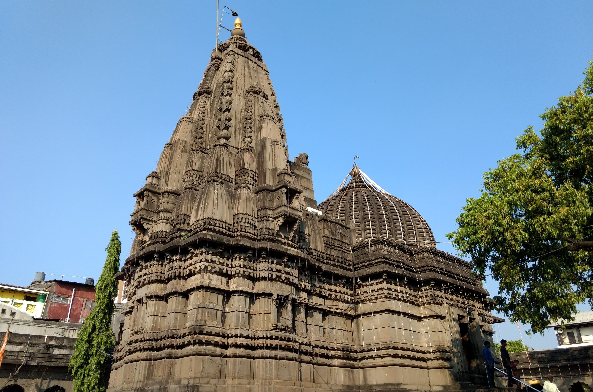

About Kalaram Temple
The Kalaram Temple is an old Hindu shrine dedicated to Lord Rama, located in the Panchavati area of Nashik city, Maharashtra. It is widely considered the most important Hindu shrine in the city, visited by thousands of devotees every day.
The temple derives its name from the black statue of Lord Rama ("Kalaram" translates to black Rama). The sanctum sanctorum also houses the statues of Goddess Sita and God Lakshmana.
History & Heritage
The original temple dates back to the Rashtrakuta Period (7th to 11th centuries), though the Rama idol is estimated to be over 2,000 years old. During early Islamic attacks, temple Brahmins threw the idol into the Godavari River to protect it. Later, Sardar Rangarao Odhekar had a divine dream of the black idol, recovered it from the river, and funded the rebuilding of the new temple around 1788.
According to the Ramayana, Lord Rama, Lakshmana, and Sita spent two and a half years of their exile on the northern bank of the Godavari in Panchavati. Additionally, the temple holds profound historic importance in India's social reform movement, as B. R. Ambedkar led a landmark protest outside the temple on 2 March 1930 to secure entry rights for Dalits.
Temple Complex Architecture
Main Entrance & Deities
Features a black Lord Hanuman deity at the entrance and a sacred tree with Lord Dattatreya's footprints marked on stone.
Alignment
Lord Hanuman's temple is uniquely positioned so that Lord Rama's idol is directly visible from it.
14 Steps
The main Ram temple features 14 steps, symbolizing the 14 years of Lord Rama's exile.
84 Pillars
The structure contains 84 pillars, representing the cycle of 84 lakh species required to attain a human birth.
How to Reach
- By Air: The nearest Ojhar Nashik International Airport is situated about 24 kilometers from the city center.
- By Train: The nearest railway station is Nashik Road, located about 10 km away.
- By Road: Centrally located within the city, it is just 3 km away from the Nashik Central Bus Stand.